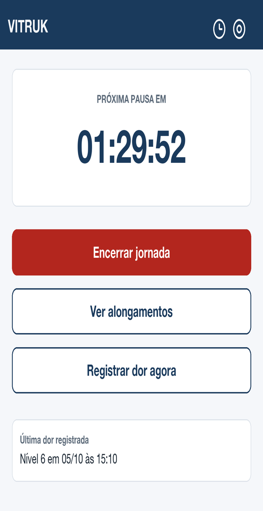

Lembrete de pausa e alongamento para quem dirige o dia inteiro.
Você passa o dia no volante. O VITRUK avisa a hora de parar, mostra alongamentos para fazer com o veículo parado, e deixa você anotar como o corpo está. Sem cadastro, sem internet, nada sai do seu celular.

Quem dirige o dia inteiro sabe como o corpo fica no fim da jornada. O VITRUK não promete resolver isso. Ele só não deixa você esquecer de parar.
Uma por dia, direto ao ponto.
Seus dados ficam no seu celular. O VITRUK não tem cadastro, não precisa de internet e não envia nada para lugar nenhum.